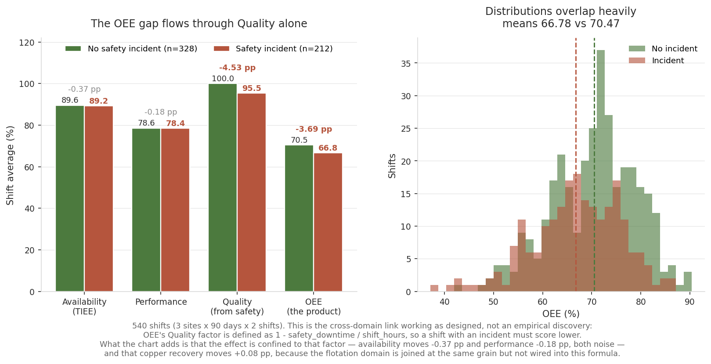
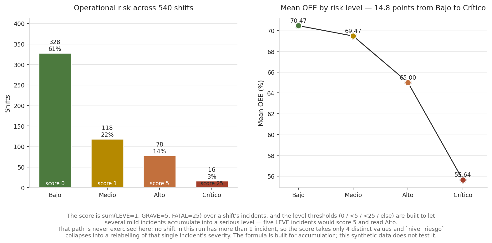
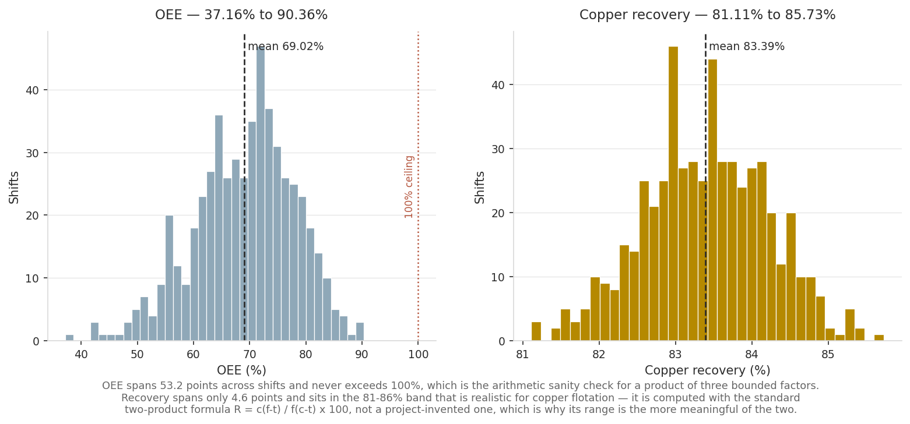
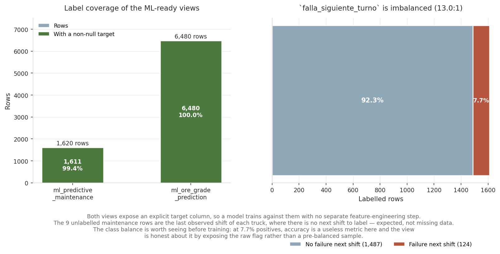

A fully local (no paid cloud) analytics warehouse unifying flotation, CAEX maintenance, and safety data for a Chilean mining site, built with dbt + DuckDB
This page shows the project's results. The methodology, the design decisions and the limitations are documented in the repository's README.
7. Validated results

This is the figure that justifies the whole warehouse. Shifts with a safety incident average 66.78% OEE against 70.47% for clean shifts, a 3.69-point gap — and the decomposition shows the gap flows through the Quality factor alone (100.00 → 95.47), with availability moving −0.37 pp and performance −0.18 pp, both noise.

Mean OEE falls monotonically across risk levels — 70.47 / 69.47 / 65.00 / 55.64, a 14.8-point spread from Bajo to Crítico.

OEE spans 53.2 points across shifts and never exceeds 100%, the arithmetic sanity check for a product of three bounded factors. Recovery spans only 4.6 points inside the 81–86% band that is realistic for copper flotation — and its range is the more meaningful of the two, because recovery uses the standard two-product metallurgical formula rather than a project-defined composite.

Both ML views expose an explicit target, so a model trains against them with no separate feature-engineering step. The 9 unlabelled maintenance rows are each truck's last observed shift, where there is no next shift to label — expected, not missing data.